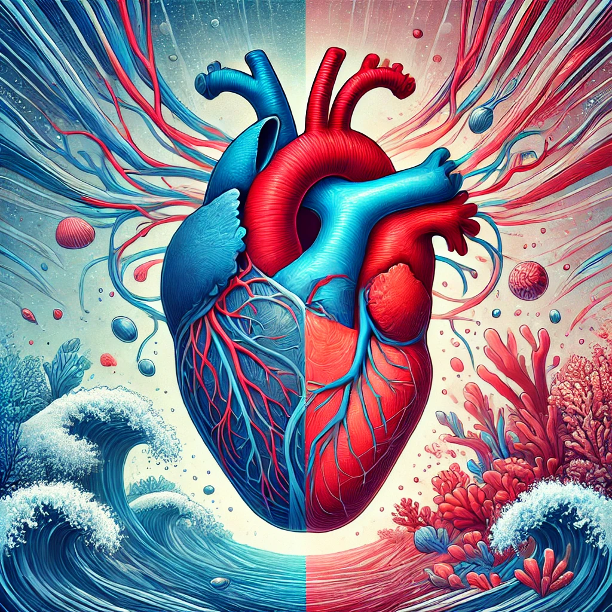

Heart and ocean
Just as the ocean has tides and waves, the heart has its
rhythmic beats,
both symbolizing life’s constancy and energy.
Both also hold
mysteries and depths yet to be fully understood, embodying strength, emotion, and the ebb and
flow of existence.